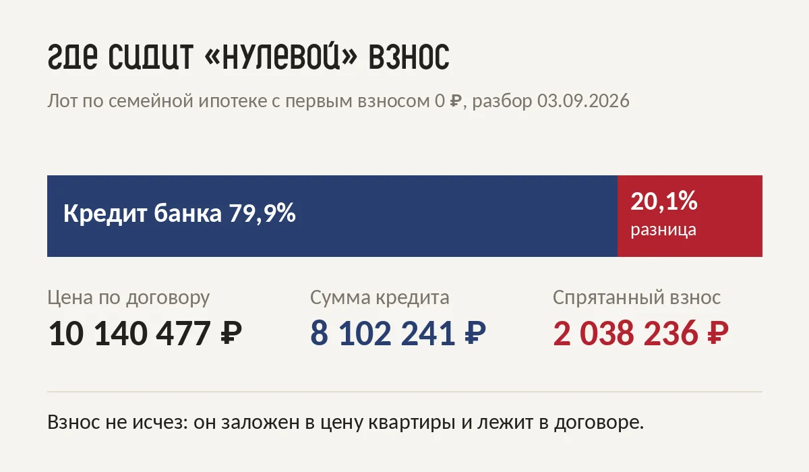
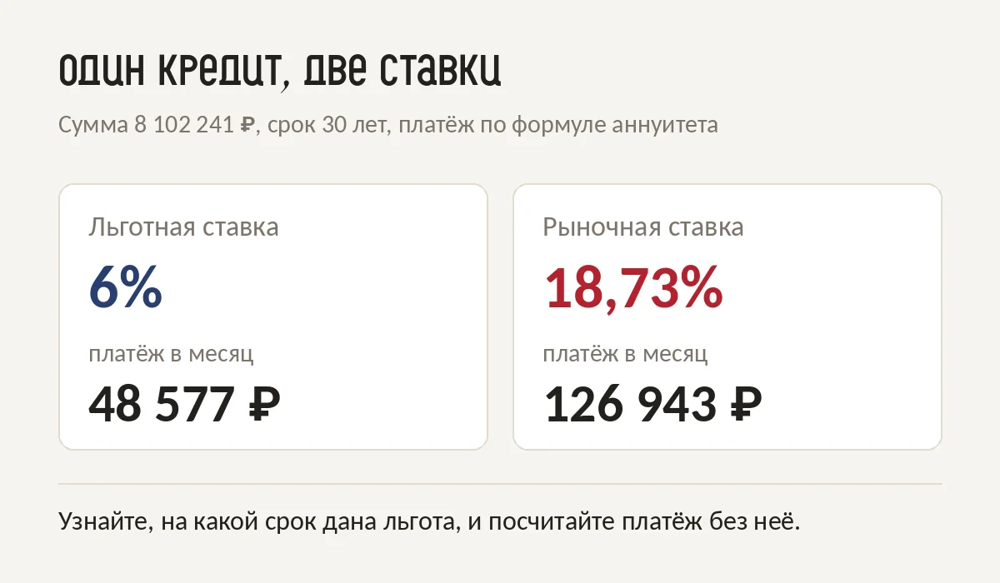

Ипотеку без первоначального взноса в 2026 году найти можно, но банк взнос всё равно получает. ЦБ разрешает банкам выдавать кредиты со взносом до 20% в новостройках не больше чем в 5% сделок. Поэтому «0 ₽ на старте» почти всегда значит, что взнос закрыт чем-то другим: ценой квартиры, маткапиталом, залогом, рассрочкой или вторым кредитом.
Я двадцать лет проработала в банке и пять лет занимаюсь недвижимостью. Про покупку без первого взноса меня спрашивают постоянно. После этой статьи у вас будут пять рабочих способов, таблица, что вы платите в каждом, и пять проверок, которые я делаю с клиентами до брони.
Банк просит взнос, потому что это ваша доля риска: чем она меньше, тем опаснее кредит. С 1 июля 2026 года ЦБ ограничил долю таких кредитов в выдачах каждого банка. Кредит без взноса стал штучным товаром, его получают заёмщики с чистой историей и низкой нагрузкой.
Лимиты ЦБ на третий квартал 2026 года:
Остальным банк отвечает «приходите с 20%». По семейной ипотеке это тоже нижняя планка: взнос от 20% цены.
Первым взносом банк считает только три вида денег. Деньги застройщика в этот список не входят. Если застройщик «дарит» вам взнос, для банка это всё равно кредит почти на всю цену, и он упирается в тот же лимит ЦБ.
По решению ЦБ взносом считаются:
Поэтому застройщик решает задачу иначе: закладывает взнос в цену квартиры.
Способов всего пять, и в каждом взнос остаётся на месте. Он переезжает в цену квартиры, в бюджетный сертификат, в залог второй квартиры, в рассрочку или во второй кредит. Ниже каждый способ с цифрами и тем, на чём в нём теряют деньги.
Самый частый вариант в Москве. В начале сентября я разбирала три таких предложения по семейной ипотеке. Во всех трёх разница между ценой по договору и суммой кредита оказалась ровно 20,1%.

На одном лоте это выглядело так:
Эти два миллиона покрывает застройщик, потому что цена квартиры по такой программе выше цены при полной оплате. Платёж в рекламе при этом честный: при 6% годовых на 30 лет он 48 577 ₽ в месяц, я пересчитала по формуле до рубля. Только вот ставку и срок, которые всё решают, на таких карточках обычно не пишут.
Маткапитал банк засчитывает взносом, потому что это бюджетные деньги. В 2026 году на первого ребёнка это 728 921,90 ₽, на второго, если на первого не получали, 963 243,17 ₽. Для квартиры за 10 млн ₽ нужен взнос 2 млн ₽, поэтому в Москве маткапитал обычно закрывает от трети до половины взноса, остальное добираете сами.
Банк выдаёт кредит на новую квартиру под залог старой. Взнос тогда не нужен совсем, зато в залоге у банка оказываются обе квартиры. Если платить станет нечем, взыскание обратят на обе. Этот способ подходит тем, кто покупает жильё побольше и в ближайший год продаёт нынешнее.
Такие рассрочки приходят волнами. Под Новый год 2025 их было много, а после праздников минимальный первый платёж поднялся до 10%. У рассрочки нет проверки банка, это её плюс. Минусы в том, что цена в рассрочке обычно выше базовой, а остаток нужно закрыть к сроку, чаще всего той же ипотекой.
Технически это работает, на деле это самый дорогой путь. Банк увидит второй кредит в кредитной истории и посчитает его платёж в вашу нагрузку. Если оба платежа вместе забирают больше половины дохода, по ипотеке легко получить отказ. Если одобрят, вы платите два кредита сразу, один по потребительской ставке.
Коротко: дешевле всего взнос обходится с маткапиталом, дороже всего с потребкредитом. Предложение застройщика в середине, и всё решает, насколько цена «без взноса» выше цены при полной оплате.
| Способ | Что вы на самом деле платите | Кому подходит |
|---|---|---|
| Застройщик «0 ₽» | около 20% сверху в цене квартиры | стабильный доход без накоплений |
| Материнский капитал | ничего сверху, взнос из бюджета | семьям с сертификатом |
| Залог своей квартиры | риск сразу по двум квартирам | тем, кто продаёт старое жильё |
| Рассрочка без первого платежа | цена выше базовой, остаток к сроку | покупке на этапе стройки |
| Потребкредит на взнос | второй кредит по высокой ставке | почти никому |
Проверка занимает пять минут и одно сообщение менеджеру. Вам нужны три цифры: цена при 100% оплате, ставка и срок льготы. С ними вы видите настоящую цену «нуля» и платёж, который придёт после льготы.

Предложение без взноса хорошо, когда платёж вам комфортен даже без льготы, а квартира стоит своих денег вместе с наценкой. Осенью 2025 года я подбирала такую семье с бюджетом до 12 млн ₽: 47 м² с московской пропиской, без первоначального взноса, под 6% годовых. Ребята сначала почти отказались от идеи. Когда увидели квартиру, загорелись.
Видела я и обратное. Дешёвые предложения без взноса приводят людей без подушки: первый же форс-мажор, и платёж становится неподъёмным. Поэтому до брони я всегда считаю с клиентом три цифры: цену при 100% оплате, платёж после льготы и сколько останется от дохода.
Статья даёт общую картину. Решение зависит от ваших цифр: сколько есть на взнос, какой доход, какой город и район. На консультации я считаю первый взнос, платёж после льготы и переплату за весь срок, показываю подборку онлайн и говорю, что имеет смысл смотреть. По новостройкам мою работу оплачивает застройщик.
Записаться можно в моём Telegram-боте, это минута:
Записаться на консультацию в Telegram
Бот коротко расскажет, как я работаю, и попросит номер одной кнопкой. Удобнее перепиской, напишите прямо там.
Хотите сначала посчитать сами? Заберите разбор «СТАВКА» с формулой, которая переводит процент в рубли, и 9 вопросами застройщику и банку до подписания: разбор «СТАВКА» в Telegram.
Можно, но таких кредитов мало: в новостройках ЦБ ограничил их долю пятью процентами выдач банка. Чаще «0 ₽» означает, что взнос заложен в цену квартиры или закрыт маткапиталом.
Да. Банк засчитывает взносом бюджетные деньги, маткапитал к ним относится.
Деньги застройщика банк взносом не считает. Поэтому застройщик закладывает сумму взноса в цену, в разобранных мной предложениях это было около 20%.
От 20% цены квартиры. Его можно закрыть маткапиталом или региональной субсидией.
Считайте переплату. Если цена «без взноса» выше на 2 млн ₽, копить эти деньги выгодно, только когда за время накопления квартира не подорожает сильнее.
Проверено 27 сентября 2026. Лимиты ЦБ действуют на III квартал 2026 года и пересматриваются каждый квартал.
Посчитать ваш вариант со мной: консультация в Telegram. Самостоятельно: гайд «Ставка от застройщика».